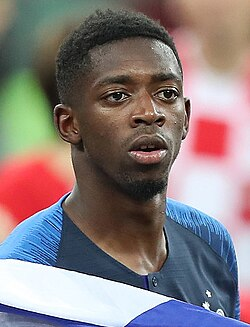

მასურ უსმან დემბელე (ფრანგული გამოთქმა: [us.man dɛm.be.le];[4] დაიბადა 1997 წლის 15 მაისს) არის ფრანგი პროფესიონალი ფეხბურთელი, რომელიც თავდამსხმელის პოზიციაზე თამაშობს ლიგა 1-ის კლუბ „პარი სენ-ჟერმენსა“ და საფრანგეთის ეროვნულ ნაკრებში. იგი ითვლება მსოფლიოს ერთ-ერთ საუკეთესო ფეხბურთელად,[5][6][7] ის ათ ფეხბურთელს შორისაა, რომლებმაც კარიერაში მოიგეს ფიფას მსოფლიო თასი, უეფას ჩემპიონთა ლიგა და „ოქროს ბურთი“. დემბელემ პროფესიული კარიერა რენში დაიწყო, სადაც პირველ გუნდთან ერთად ერთადერთი სეზონის განმავლობაში ლიგა 1-ის წლის ახალგაზრდა ფეხბურთელად დასახელდა. 2016 წელს ის გერმანულ „ბორუსია დორტმუნდში“ გადავიდა, სადებიუტო სეზონში მოიგო გერმანიის თასი და ფინალში გოლი გაიტანა. მსოფლიო ფეხბურთის ერთ-ერთ ყველაზე პერსპექტიულ ახალგაზრდა ტალანტად ითვლებოდა და 2017 წელს ესპანურ „ბარსელონას“ შეუერთდა საწყისი საფასურით 105 მილიონი ევროს ოდენობით, რამაც იმ დროს ის ისტორიაში მეორე ყველაზე ძვირადღირებული ფეხბურთელი გახადა პოლ პოგბასთან და ნეიმარის შემდეგ. მიუხედავად იმისა, რომ მან კლუბში მის მიმართ არსებული მოლოდინები სრულად ვერ გაამართლა, დემბელემ „ბარსელონასთან“ ერთად მრავალი შიდა ტიტული მოიგო, მათ შორის სამი ლა ლიგა, ორი კოპა დელ რეი და ორი ესპანეთის სუპერთასი. დემბელე საფრანგეთში 2023 წელს დაბრუნდა და „პარი სენ-ჟერმენთან“ 50.4 მილიონი ევროს სანაცვლოდ გააფორმა კონტრაქტი. 2024–25 წლების სეზონში მან კარიერაში აღორძინება განიცადა, 49 მატჩში 33 გოლი გაიტანა და 15 საგოლე გადაცემა გააკეთა, პსჟ-მ კი კონტინენტზე ტრიპლეტი მოიგო. ის ლიგა 1-ის წლის საუკეთესო ფეხბურთელად და უეფას ჩემპიონთა ლიგის სეზონის საუკეთესო ფეხბურთელად დასახელდა, ასევე ლიგა 1-ის საუკეთესო ბომბარდირად დასახელდა. მისმა თამაშმა მას 2025 წლის „ოქროს ბურთი“ მოუტანა. ახალგაზრდულ დონეზე 20 მატჩის ჩატარებისა და ხუთი გოლის გატანის შემდეგ, დემბელემ საფრანგეთის ნაკრებში დებიუტი 2016 წელს შეასრულა. ის იყო საფრანგეთის ნაკრების წევრი, რომელმაც მოიგო 2018 წლის მსოფლიო ჩემპიონატი, ასევე მონაწილეობა მიიღო უეფას ევრო 2020-ში, 2022 წლის მსოფლიო ჩემპიონატზე (რომელიც მეორე ადგილზე გავიდა) და ევრო 2024-ში. ადრეული ცხოვრება და კარიერა დემბელე დაიბადა ვერნონში, ევრში, ნორმანდიაში. მისი დედა მავრიტანელ-სენეგალეელია ვალი დიანტანგიდან, ხოლო მამა მალიელია.[8][9] მან პირველი საფეხბურთო ნაბიჯები მეზობელ ევრეში გადადგა, თავდაპირველად ALM EVREX-ში, შემდეგ კი EVREX FC 27-ში, 12-დან 13 წლამდე ასაკში.[10][11]
